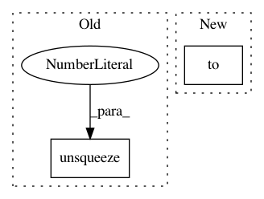

0b0eabbfd972c9e3f6323bff9d39ac5fc3ba9cc7,transformer/Translator.py,Translator,translate_batch,#Translator#,52
Before Change
// -- Preparing decoded pos seq -- //
// size: 1 x seq
dec_partial_pos = torch.arange(1, len_dec_seq + 1).unsqueeze(0)
// size: (batch * beam) x seq
dec_partial_pos = dec_partial_pos.repeat(n_remaining_sents * beam_size, 1)
// wrap into a Variable
dec_partial_pos = Variable(dec_partial_pos.type(torch.LongTensor), volatile=True)
After Change
// -- Preparing decoded data seq -- //
// size: batch x beam x seq
dec_partial_seq = torch.stack([
b.get_current_state() for b in beams if not b.done]).to(self.device)
// size: (batch * beam) x seq
dec_partial_seq = dec_partial_seq.view(-1, len_dec_seq)
// -- Preparing decoded pos seq -- //
In pattern: SUPERPATTERN
Frequency: 3
Non-data size: 2
Instances
Project Name: jadore801120/attention-is-all-you-need-pytorch
Commit Name: 0b0eabbfd972c9e3f6323bff9d39ac5fc3ba9cc7
Time: 2018-08-23
Author: yhhuang@nlg.csie.ntu.edu.tw
File Name: transformer/Translator.py
Class Name: Translator
Method Name: translate_batch
Project Name: mozilla/TTS
Commit Name: c80225544e2fb43abbccd94148cc2045d95f8f63
Time: 2020-11-06
Author: erogol@hotmail.com
File Name: TTS/vocoder/models/wavegrad.py
Class Name: Wavegrad
Method Name: inference
Project Name: Zhaoyi-Yan/Shift-Net_pytorch
Commit Name: b078a27def328cfc16dc7ab17f2537b8593544f1
Time: 2019-04-27
Author: yanzhaoyi@outlook.com
File Name: models/shift_net/shiftnet_model.py
Class Name: ShiftNetModel
Method Name: set_input